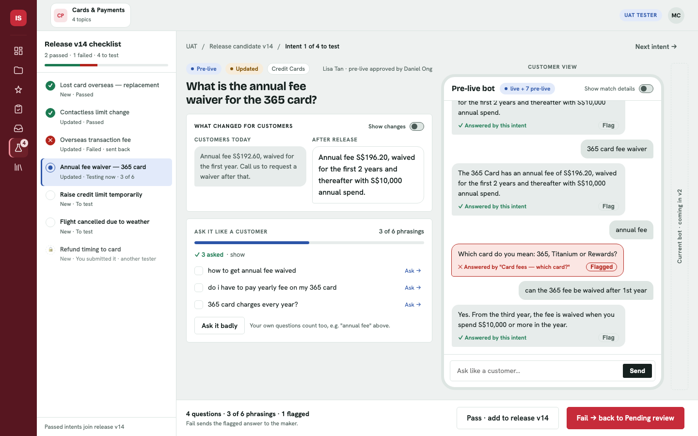
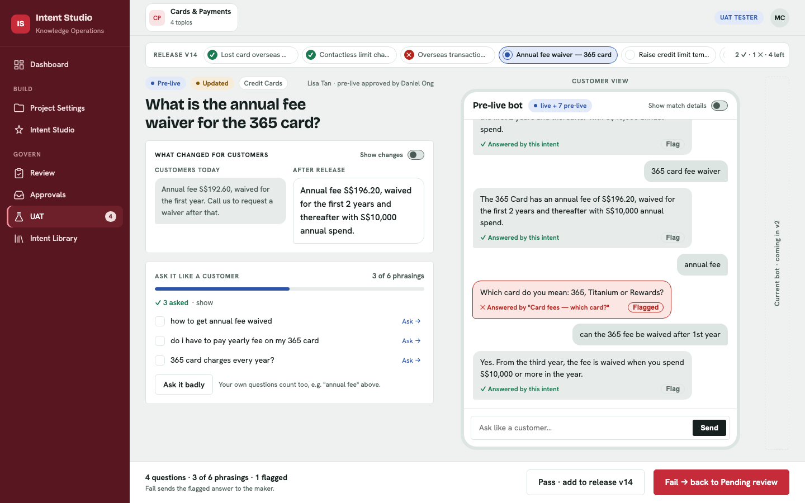

Three ways to keep all 7 changed intents and their status visible while you test one. Everything else is the locked design. Click a screenshot to open the live page. In C, click the dots to open the list.
On the UAT tab the main sidebar collapses to icons, using the collapse your app already has. The freed space holds a full checklist with names, status and a pass/fail bar. Always visible, nothing hidden. Cost: the chat and "What changed" are about 130px narrower.

A row of chips across the top: ✓ passed, ✕ failed, ● current, ○ to test. It costs no width, only one row of height. Names are shortened, and with more than about 6 intents the strip scrolls sideways.

A 60px column of numbered status dots shows overall progress at a glance. Click it and the full list slides over the page. Cheapest on space, but you have to open it to see names.